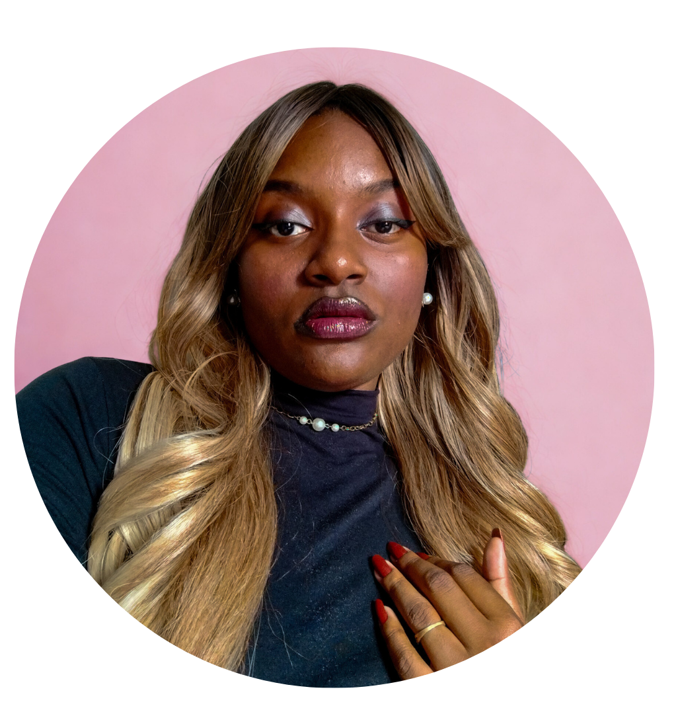

Estudante de Análise e Desenvolvimento de Sistemas | Governança de TI
Me chamo Maria Eduarda, sou moradora da Zona Leste de São Paulo, e minha trajetória na tecnologia começou na ETEC de Guaianazes, onde me formei Técnica em Desenvolvimento de Sistemas.Foi lá que me encantei pelo universo do Web Design e da UX (User Experience).
Hoje, estou cursando Análise e Desenvolvimento de Sistemas na SPTECH(São Paulo Tech School) e atuo como estagiária na área de Governança de TI na Stefanini Brasil. Essa combinação, conhecer o desenvolvimento e atuar na governança, me permite enxergar a tecnologia de forma mais completa: desde a construção até a organização e conformidade dos processos.
Gosto de desenvolver em Front-end
Meus cantores favoritos: Kendrick Lamar, Djavan, Jorge Ben Jor
Apaixonada por Fórmula 1
Técnico em Desenvolvimento de Sistemas | 2022 - 2024
Técnologo em Ánalise e Desenvolvimento de Sistemas | 2025 - cursando
Excel Intermediário – Open Academy Santander | 2026
Curso de React Native – Online